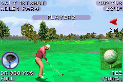
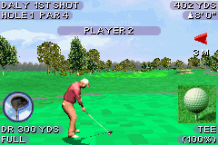

Tiger Woods PGA Tour 2004

Not Complete on 2018-05-15
3 / 5
Release Date: Nov 4, 2003
Meta Score: 75
Screenshots
 

Notes
Tiger Woods PGA Tour 2004 is a proper golf simulator in the long running Tiger Woods series of golf simulators.I played enough to get an idea of how the game played. It does have a career mode with an ending but I ended up being a bit put off and didn't want to put in effort to master the game (see below for criticism). So I moved on.
I was not a fan of the controls. You hold down to swing back, and then up to swing forwards. It's hard to tell exactly what you're aiming for to get maximum power. Also there doesn't seem to be any risk of inaccuracy unless you actively hold left/right to draw/fade your shot. The real issue is that the shot estimating line doesn't seem to show you where the ball will bounce, only where it will (theoretically) end up after stopping. This makes it almost useless for shooting over water, as it's very hard to judge whether you're actually going to make it over the water.
The game includes a tutorial, but this is very detailed in some useless areas (it has a separate section for both hold left to fade and hold right to draw), but doesn't explain some other fundamental aspects of the controls and interface. Not the best if you don't have the manual.
In terms of content, the game has 5 courses, and a few golfers to choose from. You can set a few options like wind strength that affect the match. In career mode you choose one of the golfers, with reduced stats, and play tournaments and events to earn money, improve stats, and unlock new events. It didn't seem like there was that much too it.
Overall, probably not a bad golf simulator for the GBA, but it doesn't have the arcade appeal of a Mario Golf title, and if you really want a serious golf simulator you can do a lot better on modern plaforms.